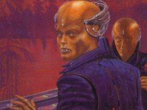
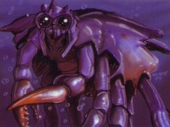

| Skeeve's Home | Table of Contents | Background | Decks & Empires | Rules, FAQ & Variants | Discussion Forum |
| Cardbase | Card Lists | Promobase | Trade | Calendar |
| Skeeve's Home | Table of Contents | Background | Decks & Empires | Rules, FAQ & Variants | Discussion Forum |
| Cardbase | Card Lists | Promobase | Trade | Calendar |
| Far Side Travelogue | The People of the Far Side |
The various card sets have mentioned a wide variety of races. Most have been depicted on one card or another.
The Argonians are gaseous beings capable of assuming a semi-solid state at will native to the Homecloud Nebula.
Illustration: R/A/T1 Shameless Argonian Sunbathing Nude
Illustration: R/C7 Doctor
The people of the Bolaar system seem to be essentially an offshoot the human race. They were forced into a subterranean existence when Indirigans attacked Bolaar and made the surface of that world uninhabitable.
Illustration: A7 Bolaar Negotiator
Illustration: C4 Pirate Captain
Illustration: C5 Weapons Officer
Illustration: R/C6 Science Officer
|  |
| © 1995 Douglas Chaffee. |
Illustration: A3 Drone Clydon
Illustration: A5 Blood Clydon
Illustration: A7 Imperial Clydon
The Drone are a small segment of the Mechad home world which evaded control when the machine's sentient programming took over.
Humans, too, exist on the Far Side. They do not appear to live within a single, cohesive society. Rather, they seem to have organized several competing empires of which the most notable are the Corporate Agressor and Plasma Occupied Territories.
The various Indirigan tribes constitute a race of brightly-hued, extremely aggressive humanoids. Their society is apparently patriarchial, treating females as little more than prized possessions. The presence of a much sought-after on an opposing ship has often brought doom to a ship as the crew finds itself unwilling to defend itself, lest the female be damaged. To avoid these situations, the Indirigans have developed for a fondness for face-to-face warfare. 'Social combat' has become their pre-emminent form of interaction.
Illustration: C1 Indirigan Female
Illustration: C9 Grand Chieftain - Marchias
|  |
| © 1995 Darryl Elliot. |
The design of Krebiz ships betrays the physical nature of the Krebiz themselves: the combination of carrier ship and capsule mimicks that of a hermit crab and its borrowed, and disposable, shell. The Krebiz themselves are formidable and surprisingly swift in personal combat.
Illustration: R/A4 Thick-Shelled Crab
The Mazgar people live beneath the surface of Bolaar. When the Indirigans razed that world, the Bolaar and Mazgar were force to live side-by-side.
Illustration: C6 Captain
This race of machine-beings originated in a binary star system at the edge of the galaxy. The have to come to see the very existence of organic life-forms as a threat to their own well-being.
Illustration: C2 Ordnance Officer
Illustration: C7 Boarding Party
Illustration: C5 Communications Officer
Scorpead look much like bipedal scorpions even to having large mandibles and stinger tail which produces a toxin deadly even to their own species. Their society is best described as an "elected dictatorship."
Illustration: R/C4 Security Officer
Closely allied with the Argonians, the Tarra'ki once considered them gods. The continue to serve out of respect for their former masters. The Tarra'ki are an amorphous silicon-based race; their flesh is much like mud, clay or rock and their blood like lava.
A race of arachnosauroid with a biological imperative to assist other races in distress. The origins of the imperative are unknown. It has channelled their social evolution along a communistic line in which scientific rationality is much prized.
Illustration: C7 Treglean Fleet Coordinator
The Troch' are an avian race with a tenative alliance with the Leopan.
Illustration: R/C4 Science Officer
Illustration: C2 Mercenary Illustration: C9 Adimiral
Of course the Far Side has recently found itself the target of invasion by multiple Empires from the Andromeda galaxy or nearby star clusters. Very little information has come to light so far as regards these new races.
Illustration: O4 Amphibian Desire
Illustration: C2 Mad Chemist Illustration: C3 J'xar Gravitic Engineer Illustration: C7 Electronic Warfare Specialist Illustration: C8 Chief Engineer Illustration: C8 J'xar High Guard - J'x Yr-llite High Guard
A Leopan would be described in average literature as a "leonine" humanoid.
Illustration: C3 Leopan Raiding Party Illustration: C7 Leopan Raiding Party Illustration: R/C8 Communications Supervisor Illustration: C8 Leopan Technologist Illustration: G4 Leopan Capture Mission Illustration: R/O2 Jungle Love Illustration: O5 Coffee Break Illustration: O10 General Quarters
An insect-like race closely tied to the Zedan. At birth, the Shon-ti term themselves "brood." In this form they are small and agile. In their adult "elder" form they become large and slow-moving. They are rumored to be the only beings who know the Zedan's true form. They engage in an annual contest of assassination: the contests eliminate each other until only one remains. The purpose of this contest is unknown.